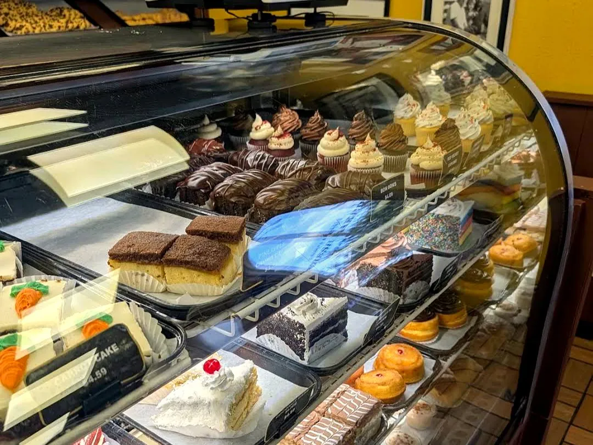
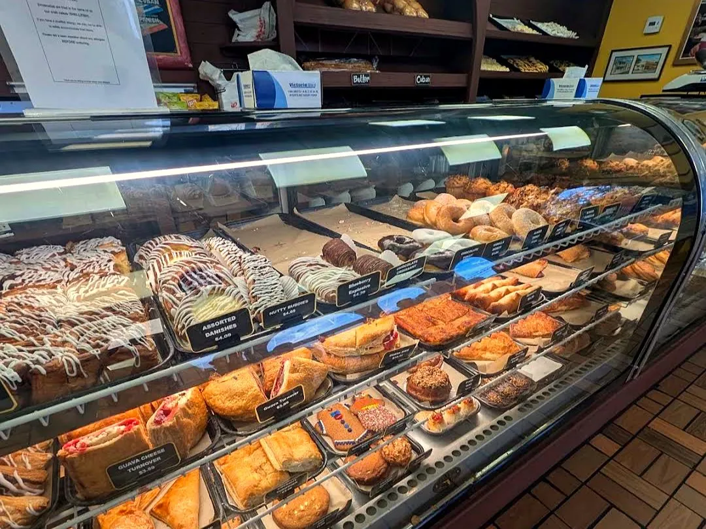

La Segunda Bakery and Cafe

2512 N 15th St, Tampa, FL 33605
Rating: 5/5
Came for the Cuban sandwich and stayed staring at the dessert case. La Segunda has been baking authentic Cuban bread daily since 1915, and the sandwich lived up to that reputation, easily the best Cuban I've had after trying a few others around Florida. The bread had that perfect crackle outside and soft crumb inside.
What I didn't expect was how stacked the pastry case would be. There were custard horns and cream puffs dusted in powdered sugar, guava cheese and apple turnovers, flan cups, strawberry shortcake, NY cheesecake with fruit, carrot cake, red velvet, Napoleons, and a piña colada cake with toasted coconut and a cherry on top. It felt less like a side display and more like half the reason locals keep showing up.




Parking is tight but manageable (street spots work for a quick stop). No seating inside, so grab-and-go or order ahead. If you're in Tampa for Cuban bread done right, and a dessert case that makes you renegotiate your order, this is the stop.


Comments
Sign in with GitHub to leave a comment or reaction.